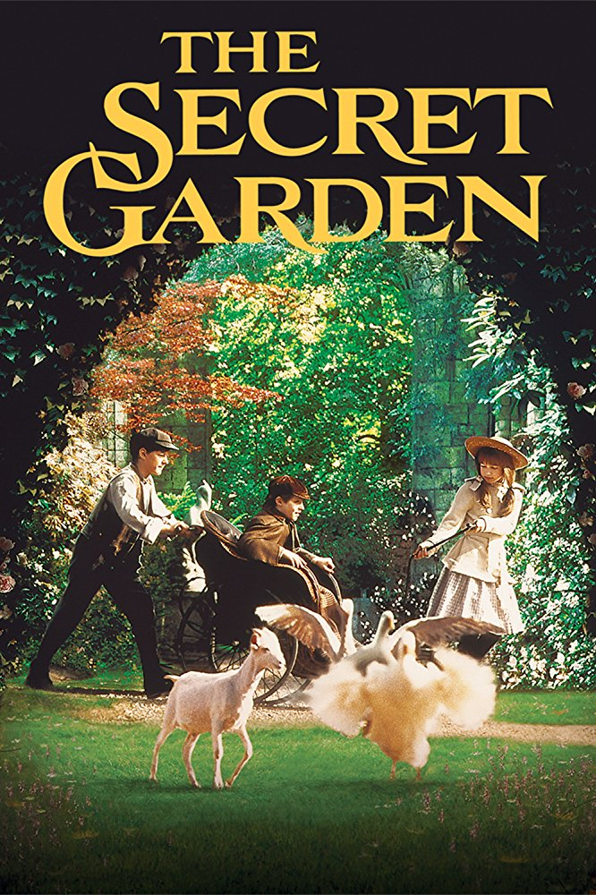

Name: Riro
Age: 15
Hobbies: Dancing
Aspirations :To find greatness
Favourite Book: secretgarden by: Caroline Thompson
The secret garden is a story of a bitter young girl named Mary whose parents had not accepted that she was a part of thier family and she was a girl instead of a boy. After an outbreak of cholera her parents died and she was left as an orphan and a fragile state in her health.
She is then taken to live with her uncle in an enormous house that has more than a hundred rooms. Her uncle; Dr Archibald Craven was a widower with one son and soon Mary and Collin (her cousin) become close and Mary forms a true relationship with him. They go on adventures together and discover that there has been a secret garden which no one is allowed to venture into but curiosity gets the better of them and they create memories in the secret garden together.